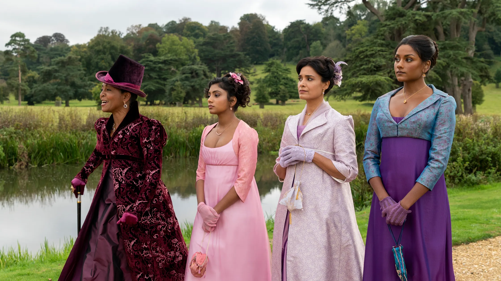

Romance book covers display the industries hesitance toward permanent change
© 2024 Lizzy Calvo
The publishing industry has undergone rampant transformation in the last few years. From the threat of bookstore powerhouses like Barnes and Noble closing during the pandemic to the rise of “Booktok,” revitalizing societal support for reading, to Penguin Random House’s acquisition of Simon & Schuster, shrinking an already small industry to an even smaller one. Even with so many changes in the publishing industry, there is one area where it has struggled to move forward: racial diversity.
In 2023, 72.5 percent of US publishing, review journal, and literary agency staffers were white, an almost 4% decrease in diversity since 2019. But while the people being hired to work in the publishing industry have become a less diverse group, so have the books they have been publishing. And nowhere is this more clear than on their covers.
Writer and Data Analyst Alice Liang set out to analyze romance book coverslast year, to see what trends carried over as consistent across popular publishing houses. So what did the data find? Somewhat unsurprisingly romance books have a staggering lack of racial diversity.
In 2022, the total number of romance books with a person of color represented on the cover spiked after a slow growth upward in the years prior. At just about 40 books from over 200 publishers, it was the highest year for diverse representation on romance book covers ever. But even more interestingly was the sharp decline in 2023 that followed, seeing the number of books with a person of color on the cover drop down to just about 25. Both years also had drastically fewer books with people of color in them compared to the total books published.
While it's only speculation, a possible reason for this shift could be attributed to changing consumer demand. After the Black Lives Matter movement gained significant media traction in 2020, a large number of average consumers wanted to see better representations of diversity. So publishers gave it to them, publishing more and more books about people of color, and with people of color represented on covers. But the drop off a year later signals that this shift towards publishing inclusive material may have been a performative one to appease consumers at the time, as opposed to a permanent change to the industry.
The Ripped Bodice, a popular bookstore chain with locations in both Los Angeles and New York sells only one kind of product: romance books. From 2016-2020, the Ripped Bodice conducted its own diversity report of what authors who identified as BIPOC were getting published in the industry. What they found in their last report in 2020 was similar to what Liang’s data illustrates.
“In there the numbers are frequently erratic; while we may see some improvements in one publisher’s numbers from one year to the next, there is a lack of consistent, year-over-year improvement across the industry to diversify the authors they publish,” said the Ripped Bodice Team.
So what we’re looking at is bigger than just book covers, it’s an entire industry struggling to change. But covers help us understand it from a new point of view because covers represent what publishers are or aren’t willing to show.
Mike Goode, author of “Romantic Capabilities: Blake, Scott, Austen, and the New Messages of Old Media,” specializes in 18th and 19th-century literature, but with an emphasis on romance and how prior media interacts with today’s media.
“A fair amount of racism that’s grounded in sort of visual coding. Somebody see’s something and they make judgments about them,” Goode said.
He explained that some publishers, working off the assumption that their pre-existing reader base is white, may be hesitant to put people of color on the cover because their focus is on sales. And the fear is that diversity won’t sell to those white readers.
“Disturbingly the last few years, it has I think been easier for certain people in the United States to be openly racist in ways that were almost unthinkable 10 years ago,” Goode said, emphasizing that the drop off in diversity in 2023 may be a result of a new societal allowance for racist behavior.
But is it possible that this assumption publishers are making is wrong? With America’s current political climate, considering this year’s election, it's easy to assume that because of who people vote for, racial biases are becoming more predominant. Especially with political platforms being developed on removing DEIA programs from schools. But while the media may seem like America is moving backward in terms of diversity, in the minds of everyday people, and everyday readers, it may not be.
“The popularity of novels, but also television programs like Bridgerton and things like that have produced more of an audience in some ways for different kinds of romance novels that do have a more diverse cast of characters,” Goode said.
LIAM DANIEL/NETFLIX
Bridgerton season one, one of the first romance TV shows to center on an interracial couple, was streamed for 297.8 million minutes by Netflix viewers. Making it one of the platform's leading shows, and showing there is an interest in the stories of people of color in the world of romance.
In 2023, Berkeley published the most books with people of color represented on the cover, at a whopping 4 books. As 2024 comes to a close, there is hope that while diversity in the publishing industry may not be progressing quickly, as all media becomes more diverse, it will encourage publishers to follow suit.